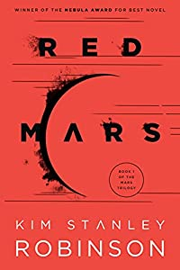
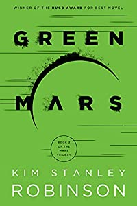

Books
Here are some of the best books for young and old alike about the Red Planet. (And some favorite Mars fiction, too.)
What could life in space look like?
Red Mars (Mars Trilogy Book 1)
by Kim Stanley Robinson
For centuries, the barren, desolate landscape of the red planet has beckoned to humankind. Now a group of one hundred colonists begins a mission whose ultimate goal is to transform Mars into a more Earthlike planet. They will place giant satellite mirrors in Martian orbit to reflect light onto its surface. Black dust sprinkled on the polar caps will capture warmth and melt the ice. And massive tunnels drilled into the mantle will create stupendous vents of hot gases. But despite these ambitious goals, there are some who would fight to the death to prevent Mars from ever being changed.
Buy
Green Mars (Mars Trilogy Book 2)
by Kim Stanley Robinson
Nearly a generation has passed since the first pioneers landed on Mars, and its transformation to an Earthlike planet is under way. But not everyone wants to see the process through. The methods are opposed by those determined to preserve their home planet’s hostile, barren beauty. Led by the first generation of children born on Mars, these rebels are soon joined by a handful of the original settlers. Against this cosmic backdrop, passions, partnerships, and rivalries explode in a story as spectacular as the planet itself.
About author
Kim Stanley Robinson is an American writer of science fiction. He has published twenty-two novels and numerous short stories but is best known for his Mars trilogy. His work has been translated into 24 languages.
Awards and Honors- Arthur C. Clarke Award for Imagination in Service to Society
- Asimov's Reader Poll Novella
- BSFA Award for Best Novel
- Hugo Award for Best Novel
- Ignotus Award-foreign novel
Why books?
Learning by books is the most efficient approach
Books are the quietest and most constant of friends; they are the most accessible and wisest of counselors, and the most patient of teachers.
Reasons why books are better than audio-lectures:
- Books are meant to be read for a bit, put down while you get an apple and think about what you just read, picked up again, re-read and so on. You have to think about, and interact with the material. Video is a sermon that is meant to be digested and swallowed whole by the gullible without much time to think critically, reflect on, or process.
- In non-fiction, authors have implicit bias with the way they write about a true story. With an audio version, the narrator compounds this with another layer of bias that could influence how you see the story, differently than how you'd see it if you'd just read for yourself.
- One of the basic downside to audiobooks is that it is very common to get lost if you are distracted by something. You may miss vital plot points even if you are distracted for a while and you will have to go back and re-listen
- Unlike physical books, you cannot simply scan the book and skip some contents that you may feel are not required. If the narrator is explaining unnecessary details or something that is boring and you want to skip that part, you may find it difficult to do that with audiobooks.
Essential
"The Disordered Cosmos"
In The Disordered Cosmos, Dr. Chanda Prescod-Weinstein shares her love for physics, from the Standard Model of Particle Physics and what lies beyond it, to the physics of melanin in skin, to the latest theories of dark matter -- all with a new spin informed by history, politics, and the wisdom of Star Trek.
One of the leading physicists of her generation, Dr. Chanda Prescod-Weinstein is also one of fewer than one hundred Black American women to earn a PhD from a department of physics. Her vision of the cosmos is vibrant, buoyantly non-traditional, and grounded in Black feminist traditions.
Awards and Honors:- Smithsonian Magazine Best Science Book of 2021
- Booklist Top 10 Sci-Tech Book of the Year
- Entropy Magazine Best Nonfiction Book of 2020-2021
Currently out of stock Days before new release:
You're from Texas?
Buy our books from stores:
| Location | Prices |
|---|---|
| Brazos Bookstore | 20-40$ |
| The Dock Bookshop | 20-40$ |
| BookPeople | 20-40$ |
| Galveston Bookshop | 15-40$ |
| South Congress Books | 15-35$ |